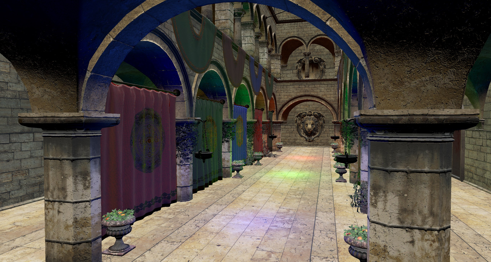

Eruptor is where I learn modern Vulkan properly: a deferred pipeline with a depth pre-pass and a G-buffer, lighting computed in HDR and tone-mapped, and automatic exposure driven by a luminance histogram in compute shaders.
Just as much, it is about architecture: RAII owns every GPU resource, builders keep configuration readable, and synchronization is explicit and fine-grained instead of “wait for idle”.
Highlights
- Depth pre-pass → G-buffer → HDR lighting → tone mapping
- Histogram-based eye adaptation in compute shaders
- Bindless access to shader resources
- Dynamic rendering, no render-pass objects
- Fine-grained barriers with
Synchronization2 - RAII resource ownership and builder-pattern setup